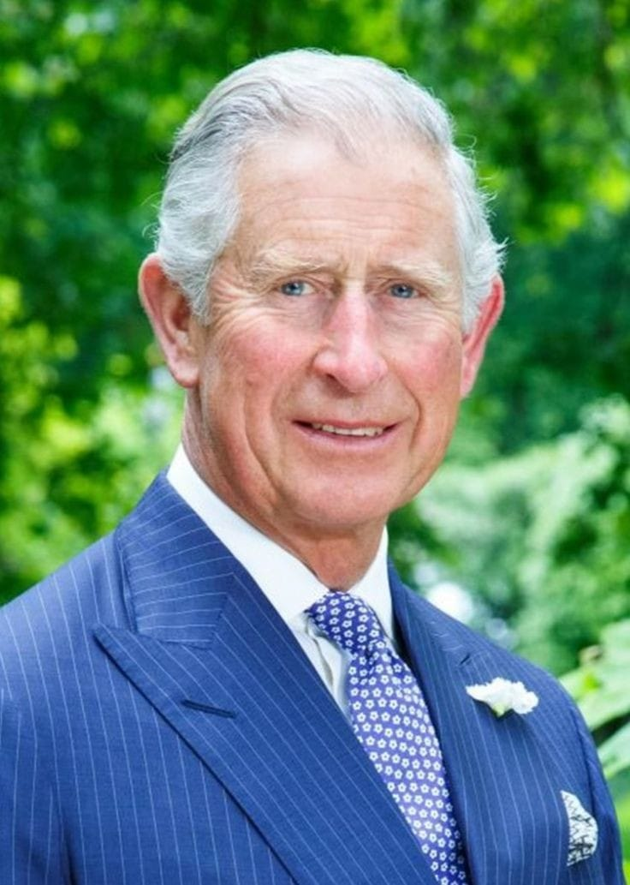

Ex esposo y actual rey, Charles III
De sangre real al ser hijo de la reina Isabell II y el principe Felipe.
De sangre real al ser hijo de la reina Isabell II y el principe Felipe.
Fue el primer hijo concebido entre la pareja real, nació el 21 de junio de 1982.
Es el segundo hijo de la pareja, nació el 15 de septiembre de 1984. Renunció a la familia real para poder casarse con la actriz Meghan Markle.
Fue quien acompañaba a la princesa el día de su muerte, fallecieron juntos.
Si querés saber más sobre la familia real, podés encontrar más información enel siguiente enlace